library(tidyverse)
library(here)
olympic_data <- read.csv(here('docs/posts/0218_blog/data/olympic_medals.csv'))Hello and Welcome to the 2nd Data 334 blog post. Today we will be looking at Olympic data and medals. The data can be found on Kaggle along with other Olympic Data. The data is from the years 1896 - 2022(Beijing Winter Olympics).
Our question we will try and answer today is, does hosting an Olympics help a nation win more medals?
To answer this question we will look at a few Olympics from different time periods and see how the host nations medal counts trended in the years surrounding their home Olympic games.
summary(olympic_data) discipline_title slug_game event_title event_gender
Length:21697 Length:21697 Length:21697 Length:21697
Class :character Class :character Class :character Class :character
Mode :character Mode :character Mode :character Mode :character
medal_type participant_type participant_title athlete_url
Length:21697 Length:21697 Length:21697 Length:21697
Class :character Class :character Class :character Class :character
Mode :character Mode :character Mode :character Mode :character
athlete_full_name country_name country_code country_3_letter_code
Length:21697 Length:21697 Length:21697 Length:21697
Class :character Class :character Class :character Class :character
Mode :character Mode :character Mode :character Mode :character olympic_data <- olympic_data |> select(discipline_title, slug_game, event_title, event_gender,
medal_type, participant_type, participant_title, athlete_full_name, country_name, country_3_letter_code)This data set has 21,697 rows, with each row representing an Olympic medalist in every event in each Olympic games from 1896-2022. There are 12 columns in the data set;
discipline_title: discipline name, ex. swimming, skiing.
slug_game: which Olympic games the medal was won at.
event_title: the specific event the medal was won in, ex. 200m Freestyle.
event_gender: gender of the event.
medal_type: Gold, Silver, or Bronze.
participant_type: Team/team member or individual athlete.
participant_title: If a team/member, what nation.
athlete_url: Link to Olympic profile.
athlete_full_name: Athlete name.
country_name: Country of the athlete or team.
country_code: Country code.
country_3_letter_code: 3 letter country code of the athlete.
We removed a couple of columns like url that don’t have any bearing on our variable of interest. The first plot we will look at will have the top nation medal counts in any Olympic games
tot_plot <- olympic_data |>
group_by(country_3_letter_code, slug_game) |>
summarise(n = n()) |>
arrange(desc(n)) |> ungroup() |>
slice(1:10) |> mutate(slug_game = fct_reorder(slug_game, n))ggplot(data = tot_plot, aes(x = slug_game, y = n, fill = country_3_letter_code)) +
geom_col() +
coord_flip() +
labs(fill = "Country", x = "Olympic Host", y = "Medal Count",
title = "Most Olympic Medals at a Single Games") +
scale_fill_viridis_d() +
theme_minimal()
This plot shows the highest medal totals of any nation at any Olympic games. The 4 highest total medal counts all come from home nations, and all 3 nations are nations known for their sporting cultures. We will explore medal trends for these nations around these 4 games, as well as the trends around the 2012 London Games, and the 1980 Lake Placid Games.
For the 4 highest medal counts I think there will certainly be a trend around the medal total for the surrounding years, and I think it will be interesting to look at GBR in a different era, and to compare the 1980 Summer and Winter Games in the 2 Nations that were the main players of the Cold War.
We will start with the 1904 St. Louis Games. This was the 3rd modern Olympic Games and was a completely wild event overall. If you are interested in a fantastic story about the 1904 Olympic Marathon, Youtuber Jon Bois tells the story in his video titled RAT POISON AND BRANDY: THE 1904 ST. LOUIS OLYMPIC MARATHON. The 1904 Olympics were originally given to Chicago, but then stolen by St. Louis and were a sideshow the the 1904 World’s Fair. Only 14 Nations sent athletes to compete and the medal distribution was incredibly US centric.
st_louis_plot <- olympic_data |> filter(slug_game == "st-louis-1904") |>
group_by(country_3_letter_code) |>
summarise(n = n()) |>
mutate(country_3_letter_code = fct_reorder(country_3_letter_code, n))ggplot(data = st_louis_plot, aes(x = country_3_letter_code, y = n, fill = country_3_letter_code)) +
geom_col(show.legend = FALSE) +
coord_flip() +
labs(fill = "Country", x = "Country", y = "Medal Count",
title = "Medal Distribution for 1904 Games") +
scale_fill_viridis_d() +
theme_minimal()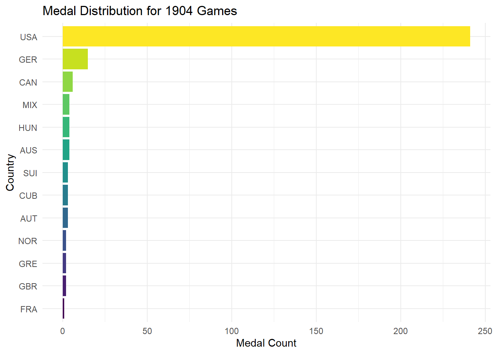
This plot shows how crazy these Olympic games were, and nothing represents the games better than the video linked above. (It has lots of visualizations)
Now that we see how strange the medal distribition was for these games, we will look at the surrounding games and see how the USA perfomed.
usa_1904_plot <- olympic_data |> filter(slug_game == "athens-1896" |
slug_game == "paris-1900" |
slug_game == "st-louis-1904" |
slug_game == "london-1908" |
slug_game == "stockholm-1912") |>
filter(country_3_letter_code == "USA") |>
group_by(slug_game) |>
summarise(n = n()) |>
mutate(slug_game = fct_relevel(slug_game, c("athens-1896",
"paris-1900",
"st-louis-1904",
"london-1908",
"stockholm-1912")))ggplot(data = usa_1904_plot, aes(x = slug_game, y = n)) +
geom_col(fill = "blue") +
coord_flip() +
labs(x = "Olympic Host", y = "Medal Count",
title = "USA Medal Counts 1896-1912") +
theme_minimal()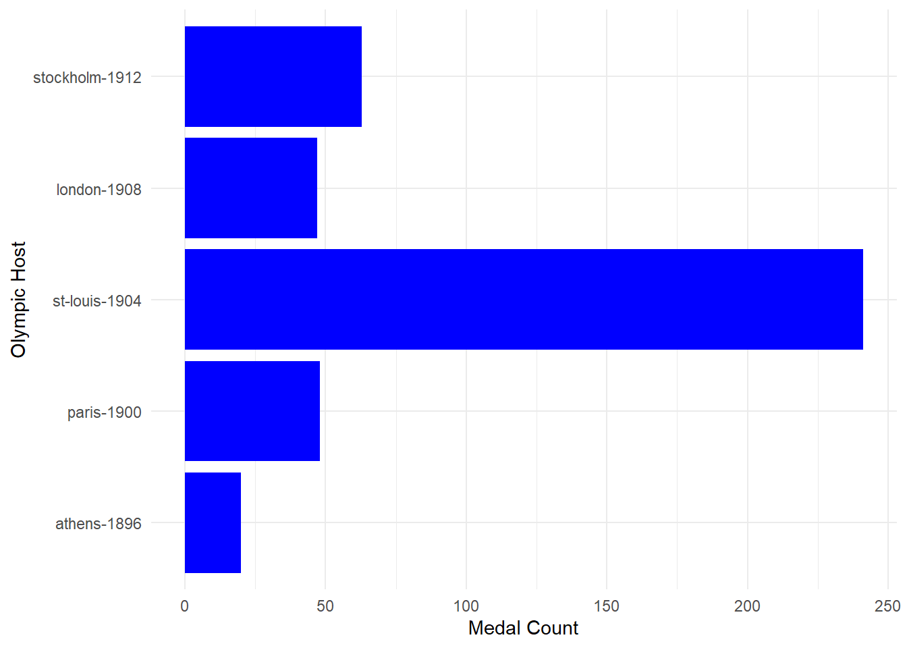
Looking at the trend of USA medals, we can see that hosting the 1904 games had a huge impact on their medal total. We can see a huge jump in medal count in the US hosted games, while the other years have a slow upward trend in overall medal count for the US. Next we will look at the 1908 London Games, another example of the early modern Olympics.
london_plot <- olympic_data |> filter(slug_game == "london-1908") |>
group_by(country_3_letter_code) |>
summarise(n = n()) |>
mutate(country_3_letter_code = fct_reorder(country_3_letter_code, n))ggplot(data = london_plot, aes(x = country_3_letter_code, y = n, fill = country_3_letter_code)) +
geom_col(show.legend = FALSE) +
coord_flip() +
labs(x = "Country", y = "Medal Count",
title = "Medal Distribution 1908 Games") +
scale_fill_viridis_d() +
theme_minimal()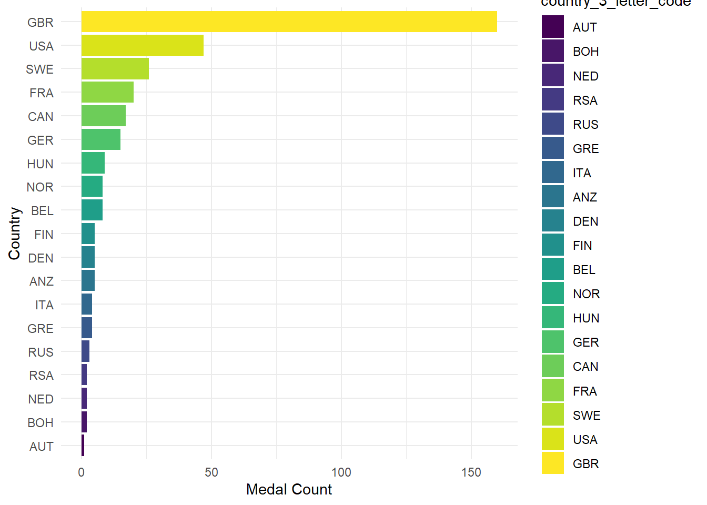
From our 1908 distribution of medals by country, we can see a lot more countries participating and a much wider distribution of medals across the countries. We do still see GBR dominating their home Games, so we will next look at how their success changed in the surrounding games.
gbr_1908_plot <- olympic_data |> filter(slug_game == "paris-1900" |
slug_game == "st-louis-1904" |
slug_game == "london-1908" |
slug_game == "stockholm-1912" |
slug_game == "antwerp-1920" ) |>
filter(country_3_letter_code == "GBR") |>
group_by(slug_game) |>
summarise(n = n()) |>
mutate(slug_game = fct_relevel(slug_game, c("paris-1900",
"st-louis-1904",
"london-1908",
"stockholm-1912",
"antwerp-1920")))ggplot(data = gbr_1908_plot, aes(x = slug_game, y = n)) +
geom_col(fill = "red", color = "blue") +
coord_flip() +
labs(x = "Olympic Host", y = "Medal Count",
title = "GBR Medal Counts 1900-1920") +
theme_minimal()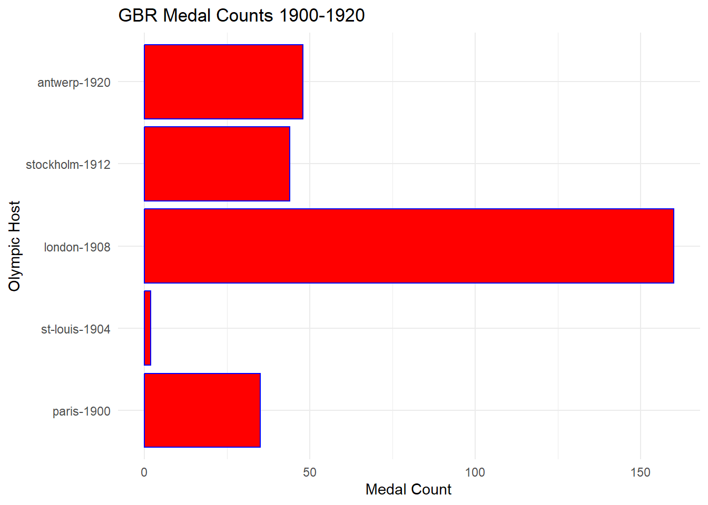
Here we can see that GBR also has a huge amount of success in their home games compared to other additions. There is less of a drop off compared to the US, likely stemming from ease of travel in Europe compared to trans-continental travel. There is a crazy drop to the St. Louis games, showing how much they were ignored by most of the world. Next we will look at the Los Angeles 1984 games, and compare the modern USA games to the early 1900s.
Looking at our first Olympics close to present day, we can see a clear development in world athletics and the global identity of the games, with a much larger spread of nations receiving medals. The USA still dominates their home games, but now we will see the surrounding years and the USA medal totals.
los_angeles_plot <- olympic_data |> filter(slug_game == "los-angeles-1984") |>
group_by(country_3_letter_code) |>
summarise(n = n()) |>
mutate(country_3_letter_code = fct_reorder(country_3_letter_code, n))ggplot(data = los_angeles_plot, aes(x = country_3_letter_code, y = n, fill = country_3_letter_code)) +
geom_col(show.legend = FALSE) +
coord_flip() +
labs(fill = "Country", x = "Country", y = "Medal Count",
title = "Medal Distribution 1984 Games") +
scale_fill_viridis_d() +
theme_minimal()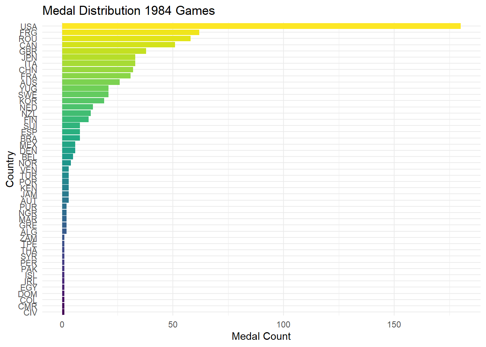
usa_1984_plot <- olympic_data |> filter(slug_game == "munich-1972" |
slug_game == "montreal-1976" |
slug_game == "los-angeles-1984" |
slug_game == "seoul-1988" |
slug_game == "barcelona-1992" ) |>
filter(country_3_letter_code == "USA") |>
group_by(slug_game) |>
summarise(n = n()) |>
mutate(slug_game = fct_relevel(slug_game, c("munich-1972",
"montreal-1976",
"los-angeles-1984",
"seoul-1988",
"barcelona-1992")))ggplot(data = usa_1984_plot, aes(x = slug_game, y = n)) +
geom_col(fill = "red") +
coord_flip() +
labs(x = "Olympic Host", y = "Medal Count",
title = "USA Medal Counts 1972-1992") +
theme_minimal()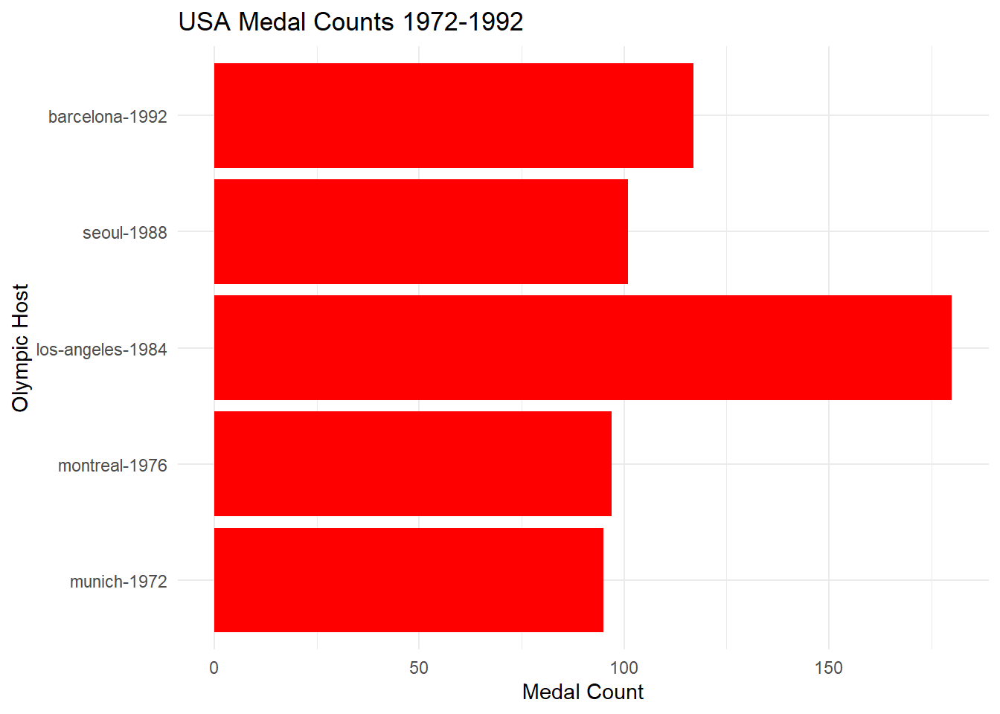
We will not look at the 1980 Moscow Summer Games here due to the USA boycott of these games. Looking at the other games surrounding the 1984 games, we see that there appears to be a steady raise in the medal total, except for a massive jump and drop around 1984. The home Olympics for the USA once again cause a huge leap in their medal performance. The earlier games could easily be explained by travel difficulty or ease, but with a differnt global appreciation of the games, the home jump is harder to explain. Next we will look at the 2012 London games to see if GBR follows the same trend with their modern games.
gbr_2012_plot <- olympic_data |> filter(slug_game == "athens-2004" |
slug_game == "beijing-2008" |
slug_game == "london-2012" |
slug_game == "rio-2016" |
slug_game == "tokyo-2020" ) |>
filter(country_3_letter_code == "GBR") |>
group_by(slug_game) |>
summarise(n = n()) |>
mutate(slug_game = fct_relevel(slug_game, c("athens-2004",
"beijing-2008",
"london-2012",
"rio-2016",
"tokyo-2020")))ggplot(data = gbr_2012_plot, aes(x = slug_game, y = n)) +
geom_col(fill = "red") +
coord_flip() +
labs(x = "Olympic Host", y = "Medal Count",
title = "GBR Medal Counts 2004-2020") +
theme_minimal()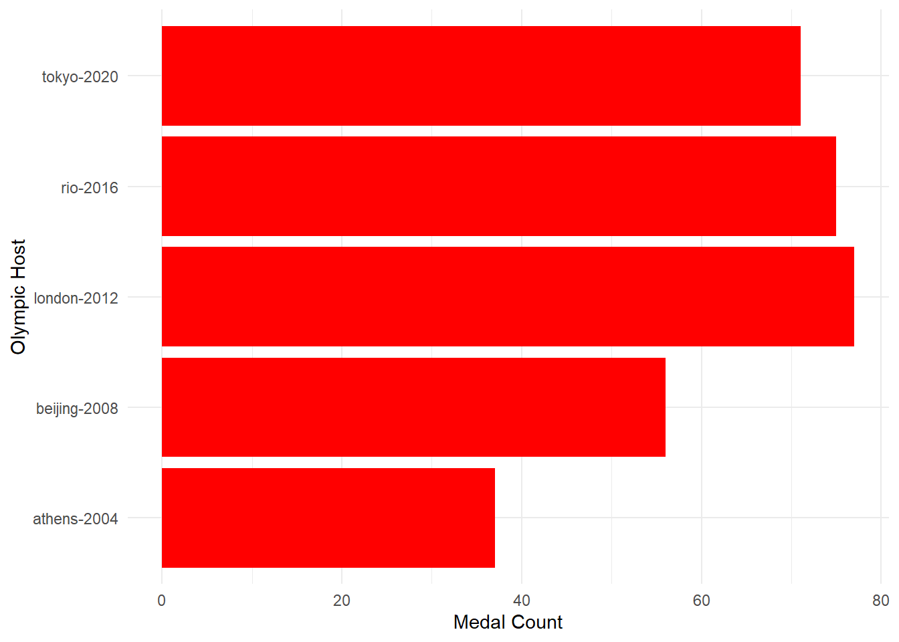
This plot shows that there is once again a jump when GBR hosted the games in 2012, but interestingly there is not much of a drop off. A reason for this could be increased spending in Athletics in the years leading up to the 2012 games, and the residual affects of that spending still helping athletes in subsequent games. The jump from the games previous to the 2012 games, so there was a clear trend before GBR hosted the games. So far the games we have looked into have been relatively free of controversy, so we will look at games with more interesting issues.
The games we will look at are the 1980 Summer and Winter games, held in Moscow and Lake Placid during the Cold war. First we will look at the 1980 Summer games in Moscow.
ussr_1980_plot <- olympic_data |> filter(slug_game == "munich-1972" |
slug_game == "montreal-1976" |
slug_game == "moscow-1980" |
slug_game == "seoul-1988") |>
filter(country_3_letter_code == "URS") |>
group_by(slug_game) |>
summarise(n = n()) |>
mutate(slug_game = fct_relevel(slug_game, c("munich-1972",
"montreal-1976",
"moscow-1980",
"seoul-1988")))ggplot(data = ussr_1980_plot, aes(x = slug_game, y = n)) +
geom_col(fill = "red") +
coord_flip() +
labs(x = "Olympic Host", y = "Medal Count",
title = "USSR Medal Counts 1972-1988") +
theme_minimal()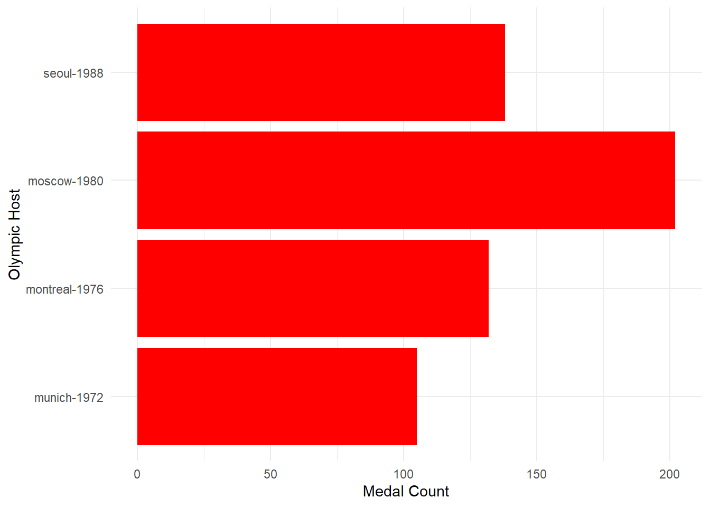
For the games surrounding the Moscow hosted games, we have less medal information due to the USSR boycotting the Los Angeles Games in response to the USA boycott of their games. Because the USA did not send athletes to Moscow, this could be seen as a reason for their increase in medal count. Another interesting statistic is the performance of GDR, or East Germany, who also were a top 10 medal winning nation in a single Olympics during these games. The USSR and East Germany also dissolved before the 1992 Olympics, which makes the performance in Seoul very impressive when considering the climate in the USSR. The Olympics were seen as a way to compete in the Cold War and prove who had the better ideology, leading to possible questionable tactics around competition. East Germany and the USSR likey enforced widespread PED usage among their athletes in order to win more in internation athletics. Next we will look at the 1980 Winter games, hosted by the USA in Lake Placid.
usa_1980_plot <- olympic_data |> filter(slug_game == "sapporo-1972" |
slug_game == "innsbruck-1976" |
slug_game == "lake-placid-1980" |
slug_game == "sarajevo-1984" |
slug_game == "calgary-1988") |>
filter(country_3_letter_code == "USA") |>
group_by(slug_game) |>
summarise(n = n()) |>
mutate(slug_game = fct_relevel(slug_game, c("sapporo-1972",
"innsbruck-1976",
"lake-placid-1980",
"sarajevo-1984",
"calgary-1988")))ggplot(data = usa_1980_plot, aes(x = slug_game, y = n)) +
geom_col(fill = "blue") +
coord_flip() +
labs(x = "Olympic Host", y = "Medal Count",
title = "USA Medal Counts 1972-1988") +
theme_minimal()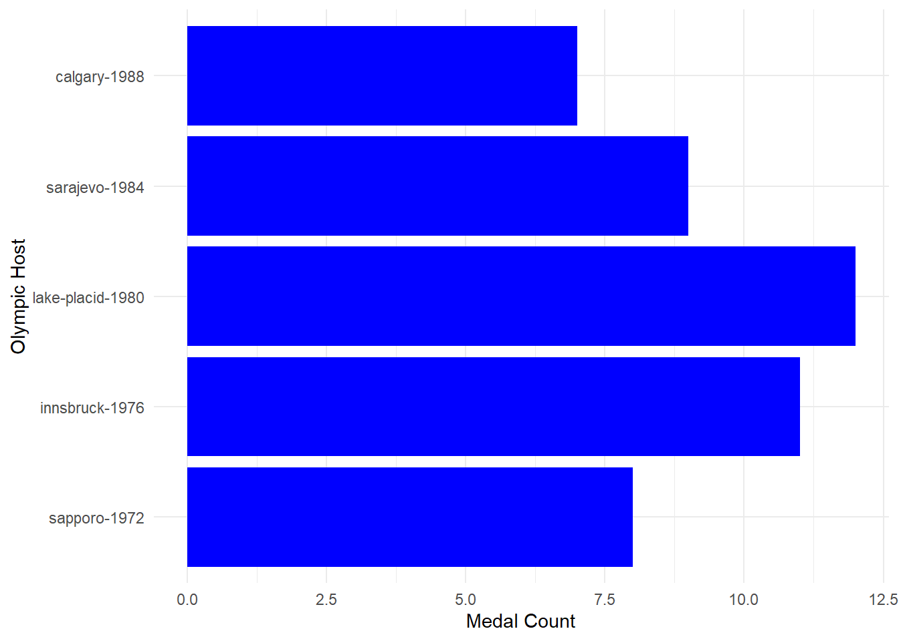
For these games, we again see that the hosted games have the best performance when looking at surrounding games. There is an interesting rise and dip in this case, like the USA was preparing for their hosted games specifically. There is also a clear drop in medal count for the USA from summer to winter, but still a good perfomance compared to surrounding years. Next we will compare the USSR and USA in the Summer and Winter games in this time period to see how they competed with one another.
cold_1980_plot <- olympic_data |> filter(slug_game == "sapporo-1972" |
slug_game == "innsbruck-1976" |
slug_game == "lake-placid-1980" |
slug_game == "sarajevo-1984" |
slug_game == "calgary-1988" |
slug_game == "munich-1972" |
slug_game == "montreal-1976" |
slug_game == "moscow-1980" |
slug_game == "los-angeles-1984" |
slug_game == "seoul-1988") |>
filter(country_3_letter_code == "USA" | country_3_letter_code == "URS") |>
group_by(slug_game, country_3_letter_code) |>
summarise(n = n()) |>
ungroup() |>
mutate(slug_game = fct_relevel(slug_game, c("sapporo-1972",
"munich-1972",
"innsbruck-1976",
"montreal-1976",
"lake-placid-1980",
"moscow-1980",
"sarajevo-1984",
"los-angeles-1984",
"calgary-1988",
"seoul-1988")))`summarise()` has grouped output by 'slug_game'. You can override using the
`.groups` argument.ggplot(data = cold_1980_plot, aes(x = slug_game, y = n, fill = country_3_letter_code)) +
geom_col(position = "dodge") +
coord_flip() +
labs(x = "Olympic Host", y = "Medal Count", fill = "Country",
title = "USSR vs. USA Medal Counts") +
theme_minimal() +
scale_fill_manual(values = c("URS" = "red", "USA" = "blue"))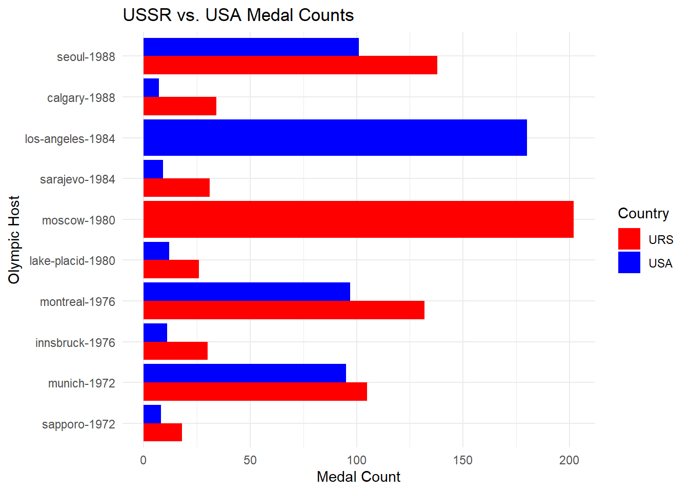
From this plot, we can see the levels of competition between the USSR and USA over the end of the Cold War. We can see that the USSR has an edge in both the Summer and Winter games, but seems to outperform the USA in the Winter Olympics more. It is interesting to see the Games that were boycotted by each nation, and the increase in the medal count for the host nations at these games. Because of these boycotts, the increase in medals could be coming from our hosting boost, and a decrease in the level of competition at these games. It is interesting to see how the performance of nations can be influenced by global issues, but certainly goes against the spirit of the games.
Our final plot we will look at is the Seoul 1988 Games in order to get a perspective on a nation not known for its sporting dominance in the same way as the USSR, USA, or GBR.
seoul_1988_plot <- olympic_data |> filter(slug_game == "montreal-1976" |
slug_game == "los-angeles-1984" |
slug_game == "seoul-1988" |
slug_game == "barcelona-1992" |
slug_game == "atlanta-1996" ) |>
filter(country_3_letter_code == "KOR") |>
group_by(slug_game) |>
summarise(n = n()) |>
mutate(slug_game = fct_relevel(slug_game, c("montreal-1976",
"los-angeles-1984",
"seoul-1988",
"barcelona-1992",
"atlanta-1996")))ggplot(data = seoul_1988_plot, aes(x = slug_game, y = n)) +
geom_col(fill = "blue", color = "red") +
coord_flip() +
labs(x = "Olympic Host", y = "Medal Count",
title = "KOR Medal Counts 1976-1996") +
theme_minimal()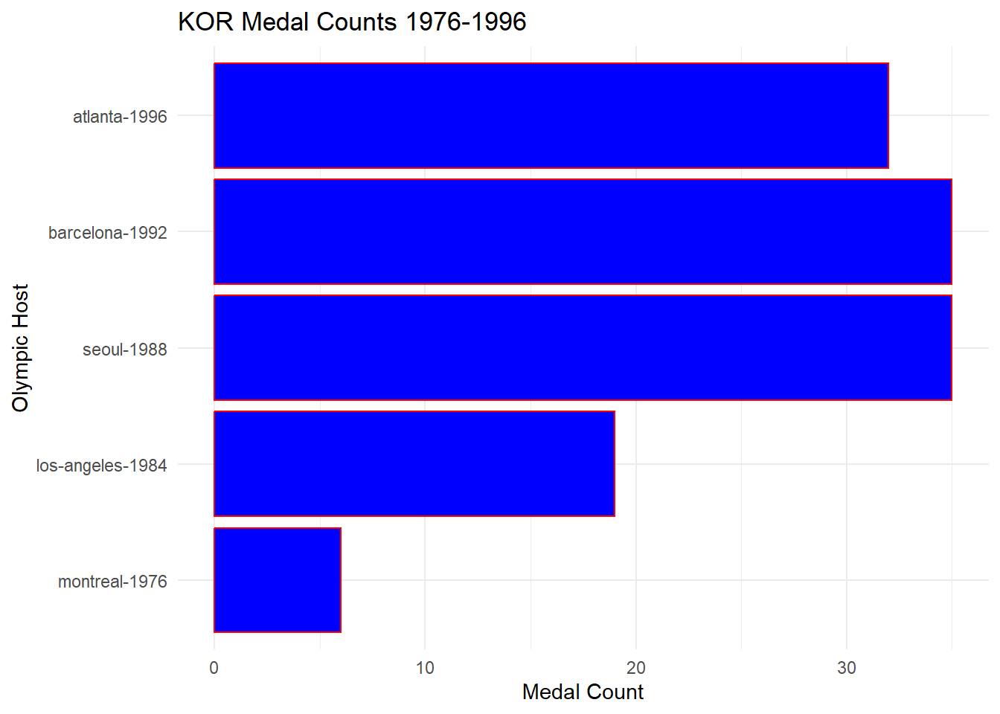
For our South Korea trend, we see clear growth leading to the 1988 Seoul games, followed by a stagnation and slow decline. The improvement from the 1976 and 1984 games is immense, but the momentum appears to slow after their hosted games. This continues to indicate that there is increased spending and public attention in athletics during and after hosting an Olympics. South Korea has a less obvious trend likely due to them being less of an athletic powerhouse, but still shows great development leading up to their games. South Korea also boycotted the 1980 Moscow games, possibly giving them more time to develop their athletics before 1984.
For this blog, we looked into trends around a nation hosting an Olympic Games. From what we can see in our plots, there appears to be a clear trend in extra success in a hosted Olympic Games. From a biased crowd, less travel, comfortable surroundings, less competition, or other factors, athletes on the whole find a way to be more successful at Olympic Games in their home nation. Something to think about is other factors that are outside of the data we can see, like adding events that are important in the home nation, biased judging, or illegal performance enhancers. The USSR is known for possibly using PEDs for athletes and tampering with tests at the Sochi Olympics, and the 1980 Moscow Games also had rumors around them. Despite this data being about nations around the world, the plots make sense as barplots due to the time nature, and the comparisons largely being numerical when we are looking at the same year. We are more looking at the distribution of medals when looking at the earlier games. We also used the coordinate flip and position dodge at points for more readability in our plots. The labels and theme were also adjusted for readability of the plots.